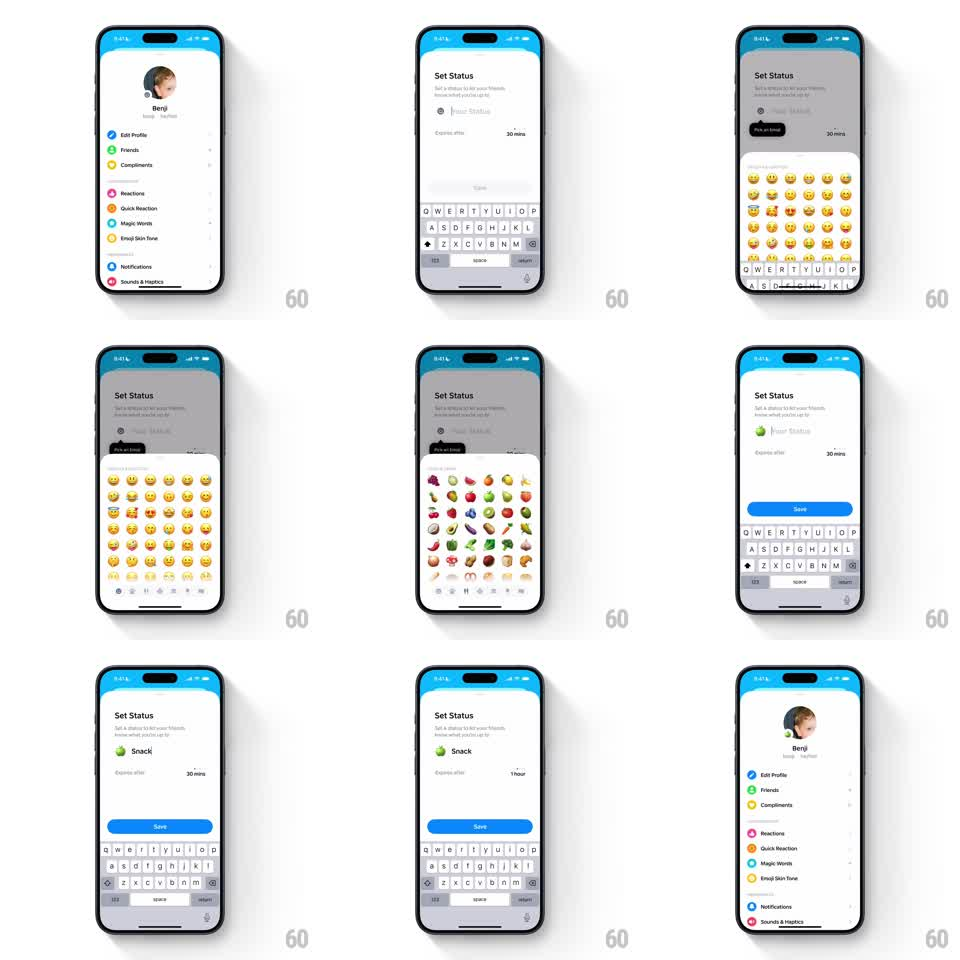

Media
Frame-by-frame

Rebuild this interaction 1:1: Honk's Set Status sheet stack - setting a status pushes the profile back as a scaled-down card, and opening the emoji picker stacks a third layer, each parent receding with scale and dim.

Rebuild this interaction 1:1: Honk's Set Status sheet stack - setting a status pushes the profile back as a scaled-down card, and opening the emoji picker stacks a third layer, each parent receding with scale and dim. ## Integration Integration: stack-agnostic spec - springs given as stiffness/damping, timed motions as duration + curve; map every value to your framework and animation library of choice. ## Scene Profile (Benji, settings list) -> "Set Status" sheet: subcopy "Set a status to let your friends know what you're up to", a status input with emoji slot, an "Expires after 30 mins" row, keyboard. The emoji grid opens as a second sheet above it. After picking (green apple), the field reads "Snack" with the apple, a blue Save button appears, and expiry offers 30 mins / 1 hour. ## Motion spec Pattern: receding card-stack of bottom sheets. - Sheet 1 (Set Status) slides up (spring ~300/24, 350ms) while the profile scales down to ~0.92, rounds its corners, and dims 20% - becoming a card peeking behind. - The keyboard rises with the sheet; the status field focuses immediately. - Sheet 2 (emoji grid) slides up over sheet 1 (same spring) while sheet 1 scales to ~0.94, dims further, and slides up ~8pt - a second receding layer; the profile behind dims again. - Selecting an emoji: the grid sheet slides down (250ms), sheet 1 springs back to full size (spring ~300/22), and the chosen glyph pops into the status field (scale 0.6 -> 1.1 -> 1, 220ms). - Typing the status text proceeds per character; the Save button fades/slides in from the bottom once text exists (200ms). - Save: sheet slides down, profile springs back to full screen, and the new status appears under the profile name (fade + rise 10pt, 250ms). ## Calibration - Two receding levels max visible: profile behind sheet 1 behind sheet 2, each ~8pt of top-edge peek. - Dimming accumulates per layer (20% -> 35%) so depth reads at a glance. ## Reduced motion Sheets crossfade (250ms); parents dim without scaling. ## Don't miss - The parent sheets must keep their rounded tops visible behind - the stack is physical, not a flat swap. - Keyboard continuity: typing, opening the emoji grid, and returning never dismiss the keyboard context.